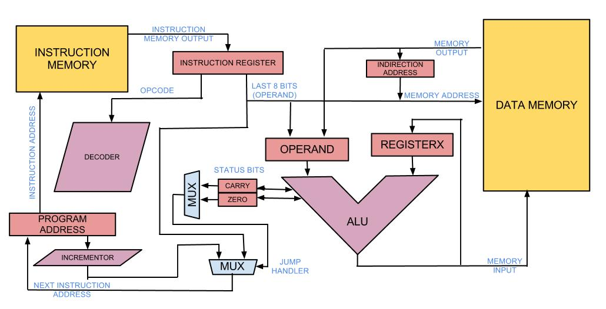
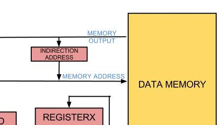
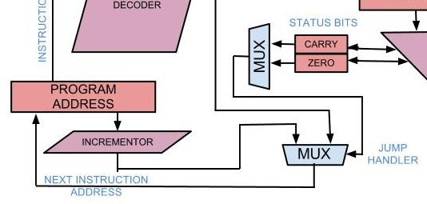

From underneath a pile of wires, after 3 episodes, 5 weeks, and lots of integrated circuits, UniCPU is starting to take shape.
The philosophy of this CPU is to build something out of pure chaos. This is mostly because we are building it incrementally rather than designing it for solving a specific task and also because we have no idea what we are doing whatsoever, the main purpose of this project is to hit problems and then contemplate how to solve them.
The size of this project forces us to look for as much functionality in a as few components as possible, but, without impairing modularity (we need to take individual breadboards at home to work on them, thus a proper separation is imposed).
After long discussions during the making of episode 2, we settled on the structure found in the figure below (well, almost, there were some slight adjustments to that schematic).

This is the layout of a typical accumulator-based CPU. The accumulator, the central component in this architecture, is composed of the Arithmetic and Logic Unit (ALU), which does all the binary or unary operation on numbers, and the two registers, Register X and the Operand, which store the operators the ALU uses in it’s operations.
Arguably, the Operand register is unneeded, but in the future, we might attempt to add pipelining to the architecture.
We wanted to keep the amount of wiring to a minimum, because wiring things one at a time is reasonable, but when you are wiring a data bus, and multiply everything by the data width, things start to add up quickly. Also, a wider data width meant more hardware in the ALU, more mess, I guess you know where this is going.
The way memory is organized into Data Memory RAM and Instruction Memory ROM classifies it as a Harvard architecture.
One of the reasons behind this choice is the fact that our data memory is 8 bit wide. If we were to store memory and instructions in the same memory, having an 8 bit instruction width is very limiting in terms of opcodes and the values that you could use in your operands. Sure, we could possibly mix two 8 bit adjacent memory adresses to get an 8+8 bit instruction, but that would only add extra complexity and hardware to our problem.
Another solution would be to get 16 bit wide memory and use the whole 16 bits for instructions and only (the last) 8 bits for data, but the problem lies in the underlying technologies we would use for this. The problem is Data Memory needs to be writeable and Instruction memory needs to be persistent (in our case), which leaves us with using either SRAM, DRAM, Flash for it. In our case DRAM offers no advantages over SRAM because the system is so small, the cost is not an issue. Using Flash memory would pose a problem because it adds extra harware to our system to interface with it. Thus, we are using SRAM for Data Memory and a EPROM for persistent Instruction Memory.
An interesting feature we added after episode two is the Indirection Address register.

The register would facilitate the usage of memory pointers, and allow vector-like access to memory: the decoder sees an indirect adressing mode at address x; the memory looks for data stored at address x and stores it in the register; the memory then looks for data stored at the address stored in the register (which was previously stored at address x).
The jump is composed of several units, but the basic idea is to allow the program to do conditional jumps.

The conditions that we currently allow are Carry/Non-Carry, Zero/Non-Zero. In the schematic above, the upper multiplexer is instructed by the decoder (which in turn is instructed by the opcode) to choose between the two status bits (Carry and Zero) and their negated values (Non-Carry and Non-Zero). The output of this multiplexer is then used to choose between the two inputs: the incremented value of the current program address or the jump address contained in the instruction.
Currently, after long hours of debugging, UniCPU has working Program Address Incrementor and Adder (which will soon feature a Negator which will allow it to also do subtractions), the next step is to complete the rest of the ALU (shift registers, XORs, ANDs, NOTs, ORs) and after that to hook-up the decoder and memories.
Until next time, the ducks on the University of York lake salute you!